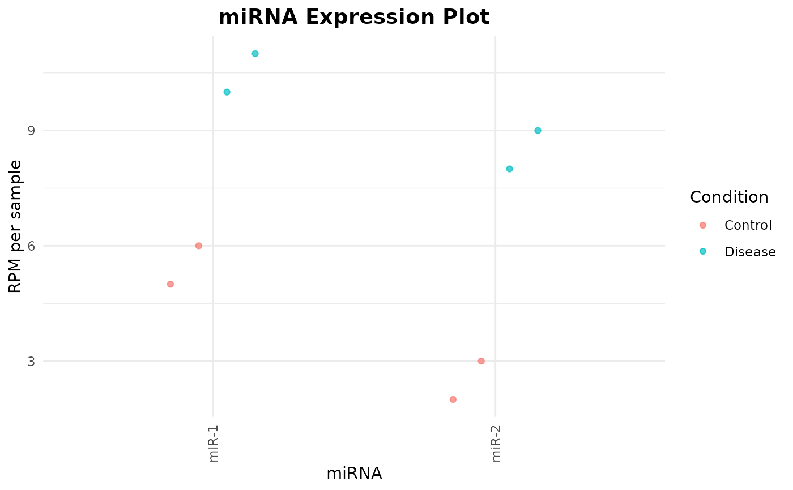

Creates a joint dot plot for selected miRNAs across one or more groups. The function returns both a static `ggplot2` object and an interactive `plotly` object. Saving the interactive plot as HTML is optional.
Usage
miRNA_expression_plot(
miRNAs_DE = NULL,
miRNA_ftd = NULL,
metadata = NULL,
condition_column = NULL,
groups = NULL,
colors = NULL,
output_name = NULL,
plot_title = "miRNA Expression Plot",
sample_column = "Sample",
tooltip_columns = NULL,
output_dir = "Interactive_plots",
save_html = !is.null(output_name),
selfcontained = TRUE,
mirnas = NULL,
rpm_matrix = NULL
)Arguments
- miRNAs_DE
Deprecated-compatible input for the selected miRNAs. It may be a character vector or a data frame or matrix whose first column contains miRNA names. Use `mirnas` in new code.
- miRNA_ftd
Deprecated-compatible input for the normalized RPM matrix. Use `rpm_matrix` in new code.
- metadata
A data frame containing sample metadata.
- condition_column
Name of the metadata column defining the groups.
- groups
Optional character vector defining the groups to display and their order. When `NULL`, all observed groups are included.
- colors
Optional named character vector assigning a color to every selected group. When `NULL`, the default `ggplot2` palette is used.
- output_name
Optional name for the HTML file. The `.html` extension is added automatically.
- plot_title
Character string used as the plot title.
- sample_column
Name of the metadata column containing sample identifiers. Default is `"Sample"`.
- tooltip_columns
Optional character vector naming additional metadata columns to include in the interactive tooltip.
- output_dir
Directory used when `save_html = TRUE`.
- save_html
Logical. If `TRUE`, save the interactive plot as HTML. By default, saving is enabled when `output_name` is supplied.
- selfcontained
Logical passed to `htmlwidgets::saveWidget()`.
- mirnas
Preferred input for selected miRNAs. It may be a character vector or a data frame or matrix whose first column contains names.
- rpm_matrix
Preferred numeric RPM matrix, with miRNAs in rows and samples in columns.
Value
A list containing:
`ggplot`: the static `ggplot2` object.
`interactive`: the interactive `plotly` object.
`data`: the aligned long-format data used for plotting.
`selected_mirnas`: miRNAs included in the plot.
`missing_mirnas`: requested miRNAs absent from the matrix.
`groups`: groups included in the plot.
`output_file`: saved HTML path, or `NULL`.
`output_folder`: saved output directory, or `NULL`.
Details
Metadata are aligned to the expression matrix using sample identifiers, not row position. Cohort-specific tooltip variables are not assumed; additional fields can be selected through `tooltip_columns`.
`miRNAs_DE` and `miRNA_ftd` are retained so calls written for miRPM 0.1.0 continue to work. New analyses should use `mirnas` and `rpm_matrix`.
Examples
rpm_matrix <- matrix(
c(
5, 6, 10, 11,
2, 3, 8, 9
),
nrow = 2,
byrow = TRUE,
dimnames = list(
c("miR-1", "miR-2"),
c("S1", "S2", "S3", "S4")
)
)
metadata <- data.frame(
Sample = c("S3", "S1", "S4", "S2"),
Condition = c("Disease", "Control", "Disease", "Control"),
Sex = c("F", "M", "M", "F")
)
output <- miRNA_expression_plot(
mirnas = c("miR-1", "miR-2"),
rpm_matrix = rpm_matrix,
metadata = metadata,
condition_column = "Condition",
groups = c("Control", "Disease"),
tooltip_columns = "Sex",
save_html = FALSE
)
output$ggplot
